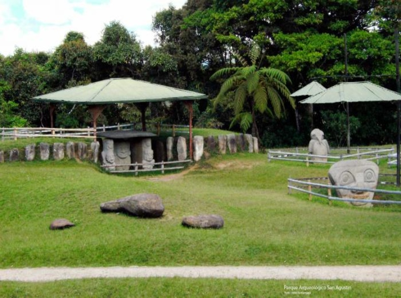
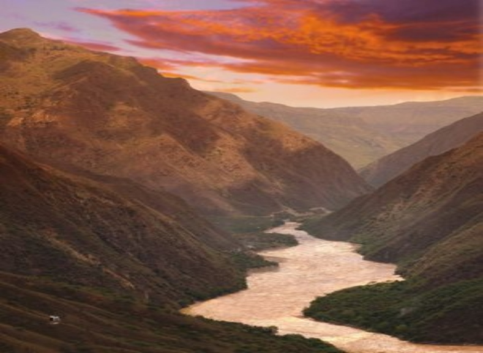
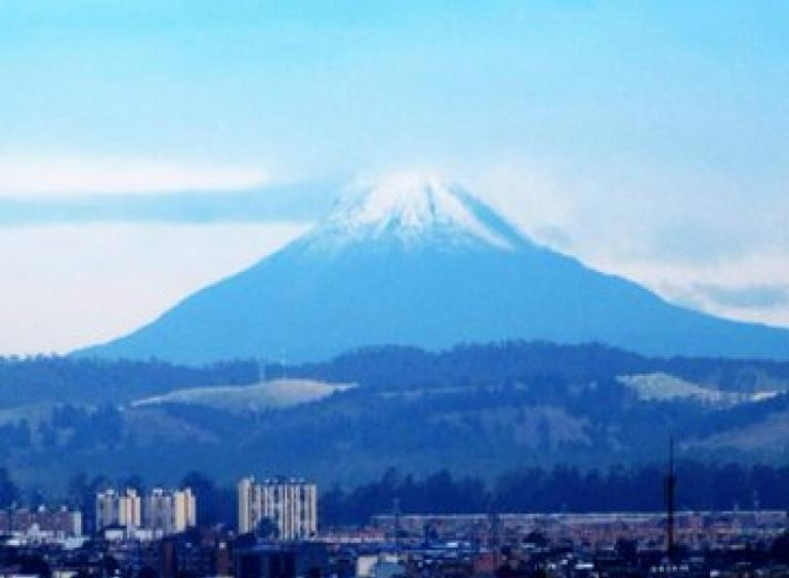

Montañas
Parque arqueologico San agustin
Huila
El Parque Arqueológico de San Agustín, cuenta con importantes vestigios arqueológicos de una antigua y misteriosa cultura milenaria, que por el nivel de los monolitos, se puede afirmar que alcanzó un gran grado de organización. Es un buen sitio de visita conocer e informarse con diferentes culturas.
Mas informacionCañon del chicamocha
Santander
El Parque Nacional Del Chicamocha (más conocido como PANACHI), es uno de los pocos parques naturales de Colombia dedicados al eco turismo, siendo uno de los sitios más importantes del turismo en nuestro país, en el parque pueden disfrutar de varios deportes.
Mas informacionNevado del Ruiz
Caldas
Ubicado al suroriente de Manizales, el Nevado del Ruiz hace parte del Parque Nacional Natural de Los Nevados, que comprende los departamentos de Risaralda, Caldas, Quindío y Tolima.
Mas informacion